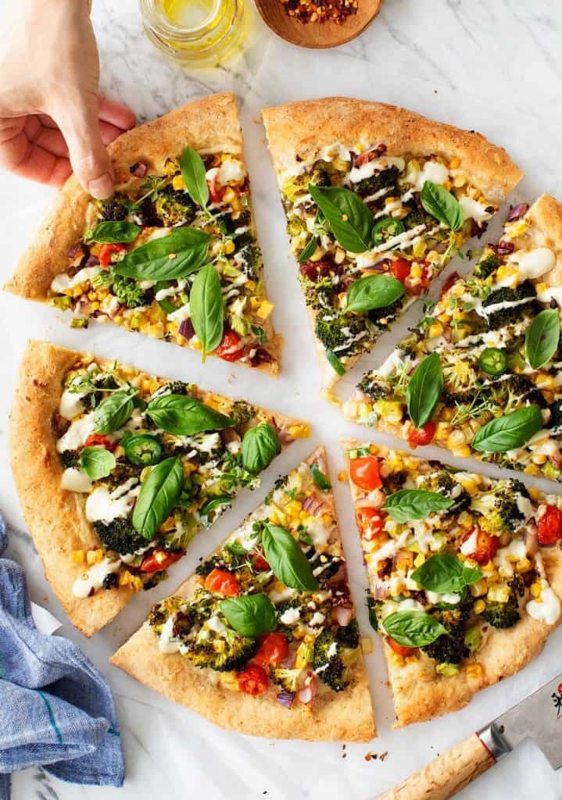

Pizza

Ingredients
- 1 small head broccoli
- 1/3 cup halved cherry tomatoes
- kernels from 1 ear fresh corn
- 1/4 cup coarsely chopped red onion
- 1/2 jalapeno
- 4 oil-packed sun-dried tomatoes, diced
- extra-virgin olive oil
- 1 (16-ounce) ball of pizza dough
- 1/2 cup fresh basil leaves
- 2 tablespoons fresh thyme leaves
- pinches of red pepper flakes
- sea salt and freshly ground black pepper
- cashew cream
Steps
- Preheat the oven to 450F.
- In a medium bowl, combine the broccoli, tomatoes, corn, onion, jalapeño, and sun-dried tomatoes and drizzle with olive oil and pinches of salt and pepper. Toss to coat and taste. The vegetables should be well-seasoned and well-coated with the olive oil so that the vegetables are flavorful throughout the pizza.
- Stretch the pizza dough onto a 14-inch pizza pan. Brush the outer edges of the dough lightly with olive oil and spoon a few scoops of cashew cream onto the center of the dough, just enough to spread it into a thin layer. Distribute the vegetables onto the dough.
- Bake 15 minutes, or until the crust is golden, cooked through, and the broccoli is tender and roasted. Remove from the oven and drizzle generously with the cashew cream (if your cashew cream is too thick to drizzle, stir in a little water). Top with the fresh basil, fresh thyme, and pinches of red pepper flakes.
Recipe courtesy of https://www.loveandlemons.com/vegan-pizza/